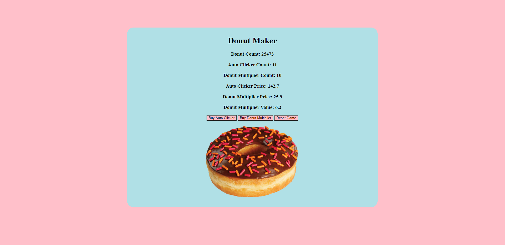
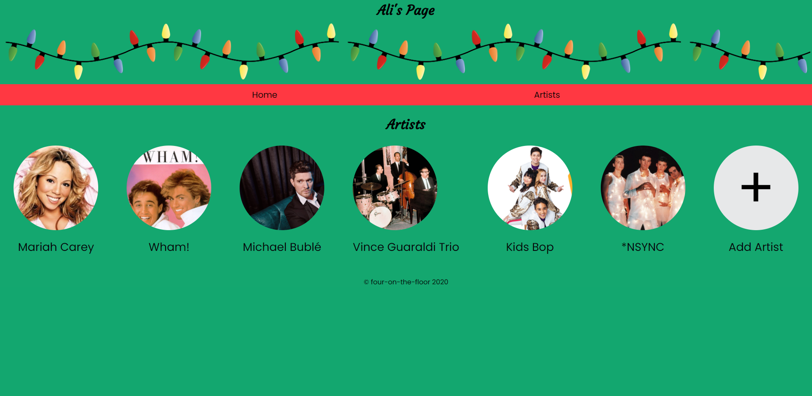

Profile Summary
A full-stack developer with experience in leadership and project management. Dedicated to implementing new strategies and improving communication between groups. Interested in leveraging previous experience as a manager to build solutions and drive forward with a devoted team.
My Story
Hello! My name is Derek Mosher. I was born and raised in Akron, Ohio. I attended college at Miami University, and graduated in 2018 with a major in Marketing and a minor in Supply Chain Management. After graduation, I went to work for ALDI Inc. as a District Manager. After completing a 50 week training program, I was assigned a district of stores in the tri state area (OH, KY, WV). In this role I was responsible for a number of different items: the hiring process, P&L management, financial KPIs, Facility and maintenance issues, project management, and more. After about two years with the company, I realized I was not fully satisfied with my work. I finally made the decision to leave and pursue a career as a software developer. My goal is to utilize my logical thinking and problem solving skills to become a successful software developer.
Skills
Java • Spring • Hibernate • JPA • JavaScript • MVC • HTML • CSS • Flexbox • Grid • TDD • Agile (Scrum) • Object Oriented Programming (OOP) • AJAX • JSON • Restful APIs • Responsive Design / Mobile • Structured Query Language (SQL) • Relational Databases • Source Control / Git
My Projects
Donut Maker
Worked independently to create a mini-game inspired by Cookie Clicker using JavaScript.
Christmas Music Collection
Vision Board
Connect